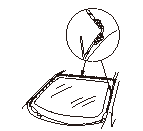

フロント ウインド ガラス モールの交換
•
ボディおよびガラスに傷をつけないように作業すること。
•
フロント ウインド ガラス モールを取付ける際は、ハンディ リムーバ セット（KTC ATP2014）相当品を使用すること。
次の部品を取外す。
•
フロント ワイパ アーム
•
カウル トップ
ボディに傷つき防止用の布テープ（A）を貼る。
フロント ウインド ガラス モール（B）上側の左右コーナ部をカットする。
ボディ塗装面に傷をつけないこと。
•
冷間時および硬化したモールを取外す場合は、ドライヤなどで暖めながら作業を行う。ボディおよびガラスに傷をつけないように作業する。
•
ボディの塗装面を傷つけた場合は、アクリル ウレタン樹脂系2液型塗料で補修する。
ルーフ側のフロント ウインド ガラス モール（C）を横から中央へ引きはがして取外す。
フロント ウインド ガラス モールのリップ部を取付け部に残さないよう、ゆっくり引きはがす。
ピラー側のフロント ウインド ガラス モール（D）を上から引きはがして取外す。
フロント ウインド ガラス モールのリップ部を取付け部に残さないよう、ゆっくり引きはがす。
フロント ウインド ガラス端面（A）からはみ出ている接着剤（B）およびガラスに残ったモールの両面テープ（C）をナイフなどで削り取る。また、ガラスとボディ間にモールの切れ端が残っていないか確かめ、ある場合は取除く。
ボディ塗装面に傷をつけないこと。
•
新しいモールを取付ける際に妨げになるガラスの接着剤、モールの接着テープまたは、その他の異物を完全に取除く。
•
ボディの塗装面を傷つけた場合は、アクリル ウレタン樹脂系2液型塗料で補修する。
ガラスのモール接着部およびボディをホワイト ガソリン、アルコールなどで清掃する。
清掃したガラス面に直接手を触れないようにすること。油脂、水滴、汚れなどが付着した場合は再度清掃すること。

ノズル先端の穴が2mmのカートリッジを使用して、ガラス プライマをガラスのモール接着部（A）に塗布する。
•
ボディ プライマを使用しないこと。
•
ガラス プライマを塗布後、30分以内にモールを取付けること。
接着剤をガラス プライマ塗布箇所に塗布する。
接着剤塗布後5分以内にモールを取付けること。
新しいフロント ウインド ガラス モール（A）の左右角部でフィルム（B）を両面テープ面から50mm程度はがす。
フィルムの端を外側へ引出しておき、フロント ウインド ガラス モールの左右角部（C）をガラスの角部（D）に合わせて位置決めする。
フロント ウインド ガラス モール（A）を樹脂製のヘラなどで軽く押し、ガラス端面（B）全周にセットする。
清掃したガラス面に直接手を触れないようにすること。油脂、水滴、汚れなどが付着した場合は再度清掃すること。
フィルム（A）の端を外側へゆっくり引いて、モール内側から取外す。
モールのリップ部を開きながら引きはがす。フィルムを切断してモール内に残さないよう、すべてのフィルムを完全にはがす。
フロント ウインド ガラス モール（A）の全周をモールの両面テープ（B）でガラス端面に取付ける。
樹脂製のヘラなどを使用し、浮きやうねりがないようにモールを均一に強く押して密着させる。
取付けたフロント ウインド ガラス モールの全周に浮きやうねりがないことを点検する。
取外した部品を取付ける。